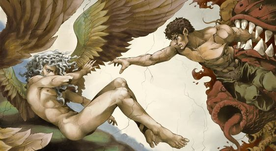

- link1
- link2
- link3
Berserk 𒉭
Berserk (Japanese: ベルセルク, Hepburn: Beruseruku) is a Japanese manga series written and illustrated by Kentaro Miura. Set in a medieval Europe-inspired dark fantasy world, the story centers on the characters of Guts, a lone swordsman, and Griffith, the leader of a mercenary band called the "Band of the Hawk".
